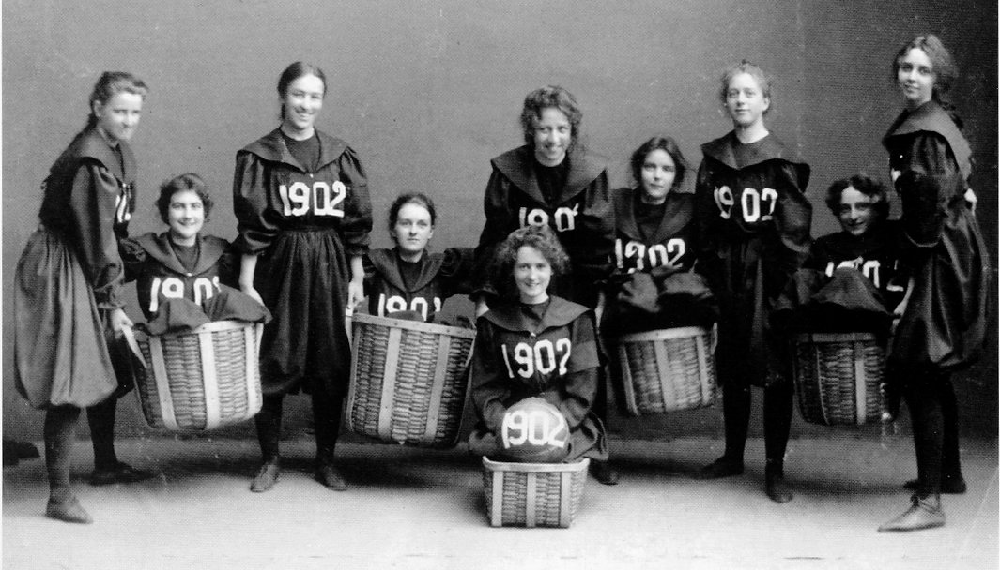
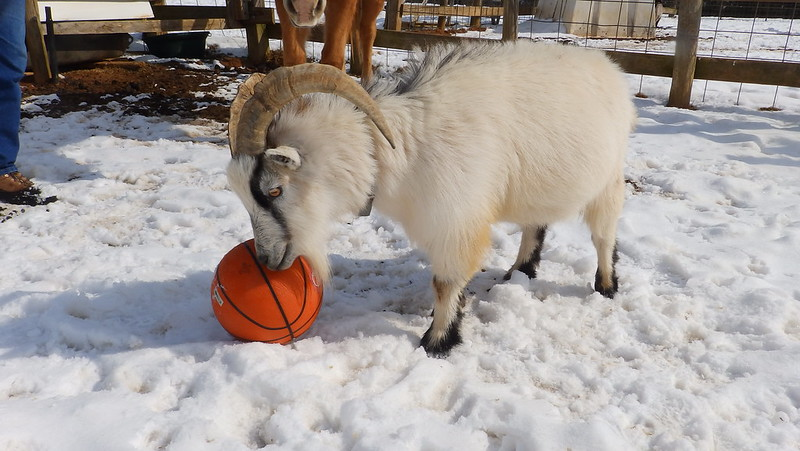

Sejarah Basketball
Basketball atau olahraga bola basket adalah olahraga dengan dua tim / kelompok, dimana masing-masing kelompok berisi 5 orang starter saling memperebutkan bola dan berusaha memasukkan bola kedalam keranjang atau ring lawan.
Pada tahun 1891, Dr. James Naismith menemukan olahraga ini. Beliau merupakan seorang guru olahraga asal kanada. Pada awalnya, olahraga bola basket dimainkan oleh sembilan orang dalam satu tim-nya dan tidak di-dribble, melainkan hanya dibawa saja dan dapat berpindah penguasaan melalui lemparan. Setelah diadakannya pertandingan resmi pertama pada 20 Januari 1892 di Kanada ternyata membawa semangat dan ketertarikan tinggi bagi negara tetangga, yaitu Amerika. Sesaat setelahnya, olahraga ini pun menjadi familiar dan terkenal ke seluruh Amerika Serikat dan pertandingan demi pertandingan dihelat di berbagai kota di Negeri Paman Sam tersebut.
G.O.A.T Dunia Basketball
Inilah list dari Greatest of All Time pilihan Author Basketball InfoNesia !
.jpg)
Tribute, Kawhi Leonard.

List keberhasilan Kawhi Leonard:
- 2x NBA Champion (2014, 2019)
- 2x NBA Finals MVP (2014, 2019)
- 3x NBA All-Star
- 2x NBA Defensive Player of the Year
- Most importantly, Winner of Torontonians.